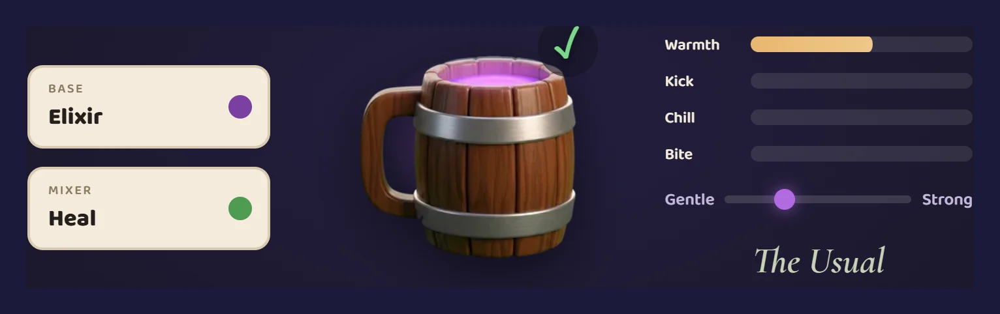
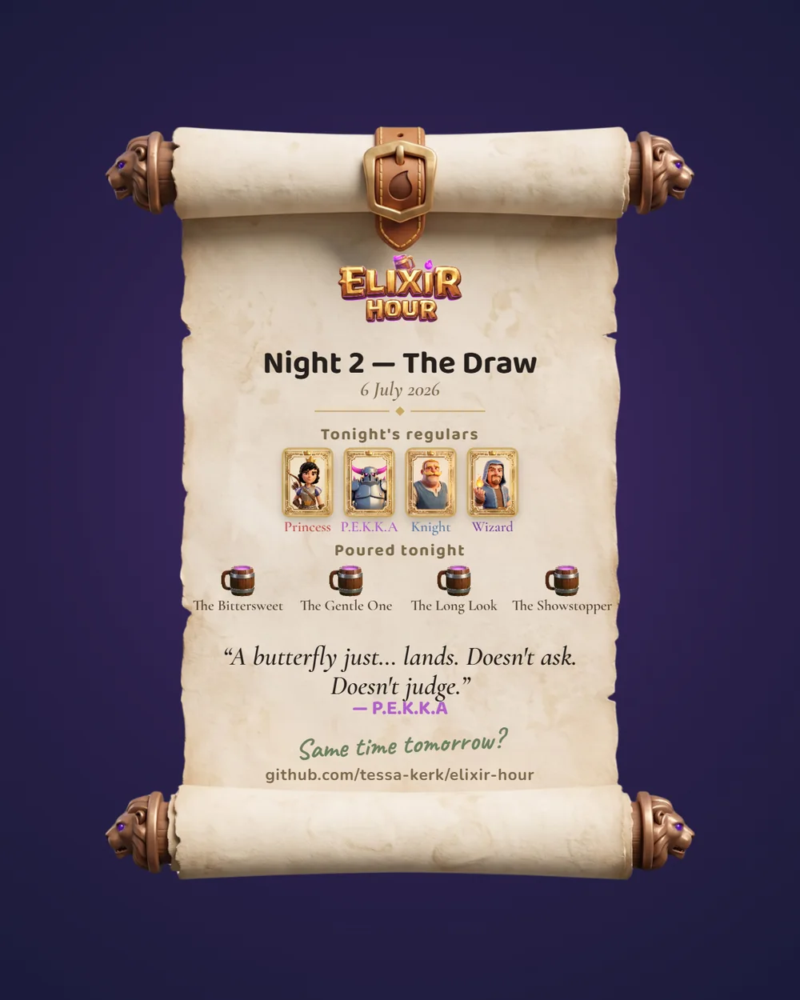

Elixir Hour
Coffee Talk, in the Clash Royale universe. A cosy bar on the neutral ground between two warring kingdoms, where the fighters come to drink and talk once the arena closes.

The brief I set myself
After the BrawlHouse, my Brawl Stars piece, I wanted to prove the thinking travels. That was a mystery/ARG; this is the opposite genre on a different game: cosy, character-led, no puzzle to crack, set in Clash Royale.
What I really build is formats: the kind you make once and keep building on. The BrawlHouse is a house the whole Brawl Stars roster can live in — swap a brawler in for a launch, write the lore that fits the moment, and the frame holds. Elixir Hour carries that instinct into a new world and a new genre. So the test wasn't "can I make a small game". It was "can I design a format a team could actually run, and build enough of it that you can play the thing, not just read a deck about it".
The idea
Live games have a rhythm problem. Between updates the calendar goes flat, and so does the conversation. Players don't stop caring in those weeks; they stop having a reason to show up. That gap is where creator and community programs earn their keep, and it usually gets filled with a countdown, a meme, or a "what do you want to see next" post.
Clash Royale has something better sitting unused. People love the cast. Clash-A-Rama built years of affection for the Knight, the Hog Rider, the Princess, all of them, as characters with lives and jokes and grievances. Nobody serves that between fights. The arena is all they get.
So: a cosy companion game where you meet the roster off the battlefield. You play Sage, keeper of a bar that serves Elixir on the strip of no-man's-land between the Blue and Red kingdoms. A fighter comes in after their duel, you read their mood, you brew and serve the right drink, and the conversation opens. No combat, no fail state, no rush. You learn the Knight is tired of always being sent in first. The Wizard is the original wizard, forgotten once the flashier ones showed up. P.E.K.K.A, the armoured mountain they aim at whatever you're most afraid of, just wants to be seen as a person.

Three things make it more than Coffee Talk in a new coat of paint.
It stands on its own, and it's a live-ops companion. The three Nights are a complete little game with their own story; no live campaign is needed to make sense of them. The extra layer is the in-game newspaper, the Arena Herald, which mirrors what's actually happening in live Clash Royale: real seasons and events, retold as bar gossip. Only a game attached to a live game can do that.
You brew tomorrow's news. One drink you pour, the Knight's, on the last Night, ripples into the next morning's Herald. Serve him right and he wins his bout at dawn; serve him something loud or bitter and he loses. It's one line in one headline, but it means the game remembers you. Coffee Talk forgets every drink the moment it's served.
The world unlocks through relationships, not menus. The Knight teaches you his usual. P.E.K.K.A shares a tune from her phonograph. Each character's page in the Ledger fills in as you get to know them, with Sage's own notes scribbled in the margin. Content as friendship, not a checklist.
And underneath, the point: built once, you have Sage, the bar, the brew mechanic, the engine. Swapped per edition, you have a new arena, a cast themed to that locale, and a story tied to whatever campaign is live. Make the format, not the asset.
How it was made
I built this solo, with AI, and I want to be honest about how, because the method is the transferable part.
Canon first. Before any writing I researched the source properly: how Coffee Talk actually works, verified from the studio's own devlogs, and Clash lore, which is deliberately loose. There's no official story to contradict, but there's a mountain of card art, arena design and Clash-A-Rama to stay true to. Every character detail traces back to something real, from the Knight's moustache to P.E.K.K.A going still at the window when a butterfly lands.
Writing that doesn't read as AI. This was the hard craft. Cosy games live or die on dialogue, and AI dialogue has a smell. So I wrote to a set of rules and held the line on them: distinct voices you can tell apart with the name hidden, subtext over stating the feeling, in-world language always. The characters are people, never game pieces; nobody gets "deployed". Each Night's script took around ten rounds of back-and-forth, me reading every line and sending it back until it sounded like a person.
Prompt discipline for the art. A consistent look across a whole cast is the thing that usually breaks. I locked a single style off one anchor character, the polished Clash of Clans 3D render with no black outlines, then held every new asset to it. Name every detail in words, because the model drops the small ones. Check the writing against the art, so the Knight in the script has exactly what the Knight in the render has. A no-mercy zoom check on every output before it counted as done.
Governance, with a coding agent doing the building. The game was built in Claude Code from a single design document I kept as the source of truth, in a public repo. When a build decision changed the design, the document got updated in the same pass, so the plan and the build never drifted apart. That's the part that felt most like the actual job: not doing every task myself, but keeping one clear canon and making sure everything the "team" produced stayed true to it.

The war stories are real. Getting a page in the Tome to turn like an actual leaf of paper, curling and bowing on the way over instead of sliding like a slide deck, took far longer than it had any right to.
What it's for
The game is the proof. The format is the pitch, and it isn't a pitch for any single team.
Start with the audience. Clash Royale is a strategy game: you think, you fight, you win or lose. Elixir Hour is the other kind of evening entirely, slow and warm with no one to beat. Putting those two genres in the same universe is a real question, not a given. But plenty of us play everything; I'll grind a match of Dota 2 and then play Pokopia the same night. A cosy companion gives the game a second reason to open the app, one that has nothing to do with your ladder rank. Clash-A-Rama proved people fall for these characters when you give them room to be people, but it ended, and the big character moments come and go with limited-time campaigns. This gives that warmth somewhere permanent to live.
Then the creator angle, built into the game. At the end of every Night you get a Night Cap: a parchment share card with the Night's title and the real date, who came in, the drinks you poured, and one spoiler-safe line. One tap to save and share. Every player share is a small ad, and every streamer gets a tidy episode-ending moment instead of an awkward fade. Around that: resident regulars voiced or cameo'd by creators, recipe-card UGC, and streaming beats written to be spoiler-safe on purpose.

Next, the live-ops calendar. At a launch or a new season, it's the companion: the Herald picks up what's actually happening in the game and retells it as bar gossip within a day. Between launches, the base game carries itself, with new Nights and new lore that don't need a campaign to hang on. There's always a reason to come back. What you'd watch: between-update session frequency, share and UGC rate, creator adoption, sentiment lift, honest about what a first edition can and can't tell you.
That range is what makes it worth building. Creators get the Night Cap and beats written to be streamed. Live-ops gets the trough filled. Marketing gets an owned channel. The IP side gets what Clash-A-Rama used to give the cast: a permanent home between the big moments, and a cheap read on which characters land. The story is authored, but the optional layer around it is measurable: which Ledger pages players re-open, which tune they leave playing, whose Night Caps get shared. Localisation is in the plumbing from day one. The pieces fit together instead of each solving for one corner.
The claim I care about most is that this repeats, and I've made it true rather than promised it. There's a live "Today's Edition" in the Herald reporting the current Clash Royale season as bar gossip, refreshed from a small file when the season changes, with an evergreen fallback so a live companion never looks abandoned. Edition 1 is set in one arena; the next edition adds Nights in another, same cast, same engine, one new venue, one new story. Edition 1 took a production. Edition 2 took a weekend. That's the format.
Limits, and what's next
This is a vertical slice, and I'd rather name what a real production would change than oversell it. It's a web build; the ambition is native mobile, where this kind of game's audience actually is (Coffee Talk came to iOS and Android in March 2026, which tells you the format sells there). English is hand-written; the other six languages are AI-translated with an honest in-product note, and a real launch would have real localisation. The four bar tracks are AI-generated (Suno), and a real launch would want an original score. None of that is hidden in the build.
Credits
Made by Tessa Kerk as an original, speculative fan concept. Not affiliated with or endorsed by Supercell, and created in line with Supercell's Fan Content Policy. No Supercell code, art or copy is used; the characters are drawn in the spirit of Clash canon and Clash-A-Rama as affectionate homage. Built with AI throughout: writing, art, code and music (the four bar tracks are AI-generated with Suno), with a coding agent (Claude Code) doing the build from my design document. The AI toolchain is named openly, nothing hidden.